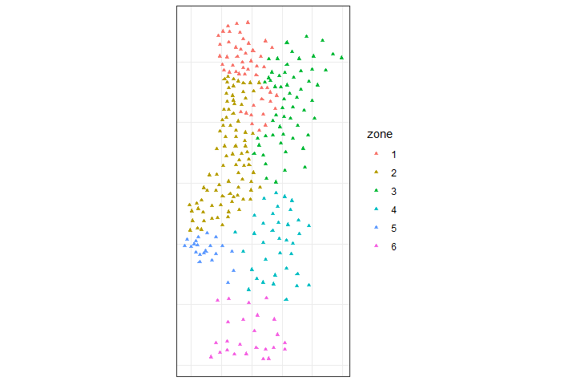

The goal of spEcula is to make it easier to use R for spatial prediction based on spatial dependence, spatial stratification heterogeneity and geographical configuration similarity, and spatial statistical inference based on spatial relationships (the three laws of geography).
Installation
You can install the development version of spEcula like so:
# install.packages("devtools")
devtools::install_github("SpatLyu/spEcula",build_vignettes = T,dep = T)Example
Geographically Optimal Similarity (GOS) model
geosimilarity package has achieved gos model,but when data is larger,geosimilarity may be slow. I develop the parallelized gos model in spEcula,which can change the cores argument in gos() and bestkappa function to parallel computation.
library(spEcula)
data(zn)
data(grid)
zn$Zn = log(zn$Zn)
tictoc::tic()
g1 = gos(Zn ~ Slope + Water + NDVI + SOC + pH + Road + Mine,
data = zn, newdata = grid, kappa = 0.08,cores = 6)
tictoc::toc()
## 10.18 sec elapsed
g1$pred = exp(g1$pred)
grid$pred = g1$pred
grid$uc99 = g1$`uncertainty99`
g1
## # A tibble: 13,132 × 7
## pred uncertainty90 uncertainty95 uncertainty99 uncertainty99.5
## <dbl> <dbl> <dbl> <dbl> <dbl>
## 1 21.8 0.0818 0.0523 0.0287 0.0243
## 2 22.5 0.0529 0.0356 0.0102 0.00954
## 3 22.9 0.0693 0.0429 0.0224 0.0148
## 4 22.6 0.0665 0.0572 0.0140 0.00799
## 5 21.9 0.0736 0.0460 0.0181 0.0139
## 6 21.5 0.0728 0.0480 0.0200 0.0169
## 7 23.2 0.0453 0.0345 0.0185 0.0178
## 8 24.8 0.0488 0.0434 0.0227 0.0118
## 9 25.0 0.0435 0.0432 0.0186 0.0103
## 10 24.5 0.0217 0.0217 0.0182 0.0141
## # ℹ 13,122 more rows
## # ℹ 2 more variables: uncertainty99.9 <dbl>, uncertainty100 <dbl>
f1 = ggplot(grid, aes(x = Lon, y = Lat, fill = pred)) +
geom_tile() +
scale_fill_viridis(option="magma", direction = -1) +
coord_equal() +
labs(fill='Prediction') +
theme_bw()
f2 = ggplot(grid, aes(x = Lon, y = Lat, fill = uc99)) +
geom_tile() +
scale_fill_viridis(option="mako", direction = -1) +
coord_equal() +
labs(fill=bquote(Uncertainty~(zeta==0.99))) +
theme_bw()
plot_grid(f1,f2,nrow = 1,label_fontfamily = 'serif',
labels = paste0('(',letters[1:2],')'),
label_fontface = 'plain',label_size = 10,
hjust = -1.5,align = 'hv') -> p
p
Spatially-aware Self-Organizing Maps(GeoSOM) model
data(pmc)
set.seed(20220724)
tictoc::tic()
geosom_bestparam(data = pmc,
coords = c("centroidx","centroidy"),
wt = c(seq(0.1,1,by = 0.1),2:5),
xdim = 4:10, ydim = 4:10,cores = 6) -> g_bestparam
tictoc::toc()
## 44.37 sec elapsedbuild geosom model
g = geosom(data = pmc, coords = c("centroidx","centroidy"), wt = .9,
grid = geosomgrid(4,4,topo = "rectangular",
neighbourhood.fct = "gaussian"))
g_superclass = geosom_superclass(g,6,method = 'pam')
g_superclass
## [1] 1 2 2 2 3 1 2 2 3 3 4 5 3 4 4 6
g_label = geosom_clusterlabel(g,g_superclass)
g_label
## [1] 2 2 3 4 2 6 5 2 2 5 6 2 3 3 6 6 5 3 2 6 2 4 2 4 5 1 1 2 2 1 3 3 2 4 4 2 2
## [38] 4 2 2 1 4 5 2 6 3 5 2 4 1 1 3 1 2 2 1 4 2 3 1 2 5 2 3 2 4 1 6 6 3 1 2 3 2
## [75] 2 2 2 4 3 4 4 4 2 2 1 2 4 4 1 6 1 4 2 2 3 2 3 3 4 3 4 3 2 2 3 5 3 1 3 2 6
## [112] 6 1 2 5 6 5 2 2 1 2 3 2 2 3 3 2 2 4 2 2 3 1 6 3 2 2 3 3 3 1 5 1 6 1 4 1 4
## [149] 2 5 4 2 4 4 3 2 2 1 4 2 6 5 5 3 6 2 1 2 3 2 6 2 1 5 3 2 1 2 2 2 3 3 3 2 2
## [186] 3 3 2 1 1 4 4 4 6 2 2 1 1 3 4 4 1 3 2 3 3 2 2 2 3 2 6 1 6 2 3 1 2 1 3 5 3
## [223] 4 2 5 5 1 6 6 5 2 2 4 3 3 1 6 1 2 1 3 2 2 3 1 2 2 1 2 3 5 4 1 4 1 2 6 1 3
## [260] 5 2 1 1 3 2 1 2 3 3 6 3 1 4 3 3 1 1 1
library(dplyr)
##
## Attaching package: 'dplyr'
## The following objects are masked from 'package:stats':
##
## filter, lag
## The following objects are masked from 'package:base':
##
## intersect, setdiff, setequal, union
pmc %>%
mutate(zone = as.factor(g_label)) %>%
st_as_sf(coords = c("centroidx","centroidy")) %>%
ggplot() +
geom_sf(aes(col = zone),size = 1.25,shape = 17) +
scale_color_discrete(type = 'viridis') +
theme_bw() +
theme(axis.text = element_blank(),
axis.ticks = element_blank())
Geographic detectors(geodetector) model
data(NTDs)
ssh.test(incidence ~ watershed + elevation + soiltype,
data = NTDs,type = 'factor')
## Spatial Stratified Heterogeneity Test
##
## Factor detector| variable | Q-statistic | P-value |
|---|---|---|
| watershed | 0.6378 | 0.0001288 |
| elevation | 0.6067 | 0.04338 |
| soiltype | 0.3857 | 0.3721 |